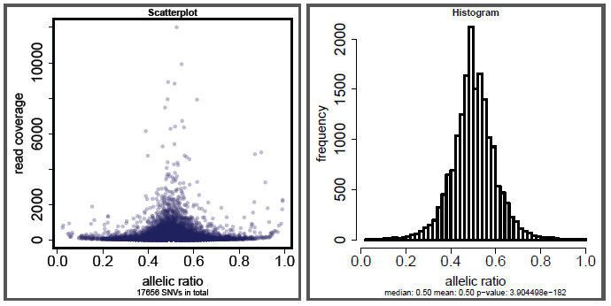

mergeSnvs.pl -- merge SNVs of different chromosomes into one SNV list the equivalent can be achieved using cat and grep commands for strand-specific cases '+$' and '\-$' can get all SNVs from the + and - strands respectively
After the full pre-processing, one can run ASARP for each chromosome's SNVs, or merge all chromosomes' SNVs into a single SNV list using this script (equivalent to using Unix cat and/or grep).
USAGE:
perl mergeSnvs.pl prefix suffix mono=x output [isStrandSp]
ARGUMENTS:
prefix the folder path and prefix string for all chr* SNV files e.g. "/home/N.A+/" for all chr* SNVs in that folder suffix the suffix after chr[1..22/X/Y/M] mono= options (no space): "mono=0": allow mono-allelic SNVs; "mono=x": discard SNVs with any allele < x reads; useful when genotype is unknown and dbSNPs are used where mono-allelic SNVs would be called output the output file name for the merged SNVs note that output.plus and output.minus are by-product outputs for + and - strands for strand-specific cases make sure the output and chr* SNV file names do not conflict
OPTIONAL:
isStrandSp set 1 if the SNV files are strand-specific default: non-strand-specific
Scatter plots: output.scatt.pdf and histogram: output.hist.pdf will be generated alongside the output, visualizing the SNV statistics.
Examples of scatter plots and histograms (mono=10):

rmDup, mergeSam, procReads, procReadsJ, asarp
This pipeline is free software; you can redistribute it and/or modify it given that the related works and authors are cited and acknowledged.
This program is distributed in the hope that it will be useful, but without any warranty; without even the implied warranty of merchantability or fitness for a particular purpose.
Cyrus Tak-Ming CHAN
Xiao Lab, Department of Integrative Biology & Physiology, UCLA